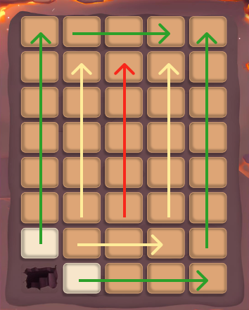

{% set title = "Инструкции" %}
{% set bodyClass = "is-main" %}

{% extends "html/layouts/default.html" %}

{% block content %}


<section class="instructions">
  <div class="container">
    <div class="instructions__block">
      <h2 class="instructions__title">
        Метод открытия плит в пещере
      </h2>

      <div>
        
        <div class="instructions__color-box">

          <div class="instructions__color green">
          </div>
          <p class="instructions__color-text">
            Открыть в первую очередь
          </p>
          <div class="instructions__color yellow">

          </div>
          <p class="instructions__color-text">
            Открыть во вторую очередь
          </p>
          <div class="instructions__color red">

          </div>
          <p class="instructions__color-text">
            Открыть в третью очередь
          </p>
        </div>
      </div>

    </div>

    <div class="instructions__block">
      <h2 class="instructions__title">
        Тактика
      </h2>

      <ul class="instructions__color-box bottom">
        <li>
          <p class="number">1</p>
          <p class="instructions__color-text">
            Открыть клетку нужно, если у нее открыты 2 из 4 сторон
          </p>
        </li>
        <li>
          <p class="number">2</p>
          <p class="instructions__color-text">
            После нужно победить всех открытых монстров
          </p>
        </li>
        <li>
          <p class="number">3</p>
          <p class="instructions__color-text">
            Открывать камни для освобождения монстров
          </p>
        </li>
        <li>
          <p class="number">4</p>
          <p class="instructions__color-text">
            Тратить оставшиеся очки атаки на Хаку
          </p>
        </li>
      </ul>

    </div>
  </div>
</section>


{% endblock %}